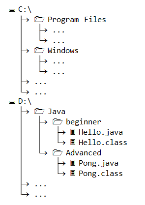
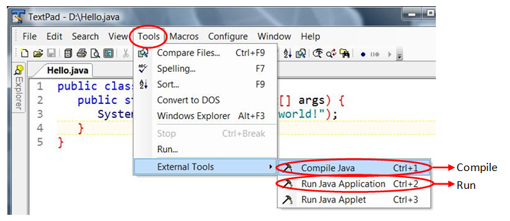

Command Prompt - CMD
Programmers use a Command-Line Shell to issue commands, instead of clicking on Graphical User Interface (GUI). This is because command-line is much more flexible and powerful than graphical interface.
The CMD is a Command Shell (or Command Interpreter, Command Prompt, DOS Prompt) for issuing commands to interact with the Windows Operating System. It provides a set of commands and utilities. It also has its own programming language for writing batch files (shell scripts).
You can launch a CMD shell via:
- "Start" button ⇒ "Run..." ⇒ Enter "cmd", or
- "Start" button ⇒ All Programs ⇒ Accessories ⇒ Command Prompt.
The CMD shell displays a prompt which ends with ">", in the form of "drive:\current-directory>". You can enter your command after the prompt.
In this article, I shall denote the command prompt simply as ">".
File System and Commands
In Windows, files are organized in directories (aka folders). The directories are organized in a hierarchical tree structure, starting from the so-called root directory for each of the hard drive (as illustrated). A directory may contain sub-directories and files. A sub-directory may contain sub-sub-directories and files, and so on.
Windows' file system is further organized in drives, identified by a drive letter followed by a colon, e.g., C:, D: and E:. Each drive has its own root directory, such as C:\, D:\ and E:\, where the "\" (back-slash) denote the root directory of each drive.
Windows' file system is NOT case-sensitive, a rose is a Rose, and is a ROSE.
Drive, Pathname and Filename
To reference a file in Windows' file system, you need to provide the drive letter, the directory name (aka pathname) and the filename. For example, in "C:\Program Files\java\jdk1.7.0_07\bin\javac.exe", the drive is C:, the pathname is "\Program Files\java\jdk1.7.0_07\bin\" and the filename is "javac.exe". The leading "\" (back-slash) denotes the root directory for that drive. The sub-directories are separated by "\" (back-slash).
The pathname can be specified in two ways:
- Absolute Pathname: An absolute pathname begins from the root directory of a drive. It starts with
X:\(whereXdenotes the drive letter and the leading "\" denotes the root), and contains all the sub-directories leading to the file (separated by "\"). For example, "C:\Program Files\java\jdk1.7.0_07\bin\". - Relative Pathname: A relative pathname is relative to the so-called current drive and current working directory. For example, if the current drive and working directory is "
C:\Program Files\java\", then the relative path "jdk1.7.0_07\bin\" resolves to "C:\Program Files\java\jdk1.7.0_07\bin\". A relative pathname does NOT begin with a leading "\" (back-slash).
Current Drive and Current Working Directory
Each CMD session maintains a so-called current drive and current working directory, which is shown in the prompt in the form of "drive:\current-directory>". All relative pathnames/filenames are relative to this current drive and working directory.
Set Current Drive (x:) Command
To set or change the current drive, enter the drive letter followed by a colon (:), e.g.,
Prompt> d: // Change the current drive to D. The prompt changes to D:\... D:\...> c: // Change the current drive to C. The prompt changes to C:\... C:\...>
Change Directory (cd) Command
To change current working directory, under the current drive, use command "cd new-path" (change directory).
It is important to take note that you need to set the current drive first (via "x:" command) before setting the current directory under the current drive.
You can specify new-path in two ways: absolute or relative. An absolute path begins with a "\" or root directory. A relative path is relative to the current working directory and does NOT begin with a leading "\". For example,
Prompt> c: // Set current drive to C. The prompt changes to C:\... C:\....> cd \ // Set current directory to the root directory of the current drive C:\> cd Windows // Set current directory to "Windows" relative to current directory of the current drive C:\Windows> cd system // Set current directory to "system" relative to current directory of the current drive C:\Windows\system> cd \myproject\java // Set current directory absolutely to "\myproject\java" of the current drive C:\myproject\java> cd "\Program Files\java\jdk1.7.0_07\bin" // Set current directory absolutely. Enclosed with double quotes if pathname contains blank. C:\Program Files\java\jdk1.7.0_07\bin> d: // Set the current drive to D drive D:\....> cd \ // Change directory to the root of the current drive D:\> cd Java // Change directory to the "Java" sub-directory of the current directory D:\Java>
Take note that:
- You need to set the current drive and current directory in two commands:
X:andcd. - The current drive and current working directory is displayed in the command prompt before the "
>".
You can cd in multiple stages (e.g., one cd for each sub-directory - recommended), or cd in one single stage with the full pathname.
Prompt> c: // C:\... C:\....> cd \ // C:\ C:\> cd Program Files // C:\Program Files C:\Program Files> cd java // C:\Program Files\java C:\Program Files\java> cd jdk1.7.0_07 // C:\Program Files\java\jdk1.7.0_07 C:\Program Files\java\jdk1.7.0_07> cd bin // C:\Program Files\java\jdk1.7.0_07\bin C:\Program Files\java\jdk1.7.0_07\bin> // Same As Prompt> c: C:\....> cd \Program Files\java\jdk1.7.0_07\bin C:\Program Files\java\jdk1.7.0_07\bin>
You can use ".." (double-dot) to refer to the parent directory and "." (single-dot) to refer to current directory. For example,
C:\Program Files\java\jdk1.7.0_07\bin> cd .. // Parent directory
C:\Program Files\java\jdk1.7.0_07> cd ..
C:\Program Files\java> cd ..
C:\Program Files>
Setting proper working directory is important. For example, to compile a Java program called "Hello.java" stored in "D:\myproject\java\":
- Set the working directory to "
D:\myproject\java\", and reference the file relatively with filename only (without the path):Prompt> d: D:\...> cd \myproject\java D:\myproject\java> javac Hello.java // Filename only, in current directory - You can also refer to a file with its full path in any working directory:
// Any working directory Prompt> javac d:\myproject\java\Hello.java
Directory (dir) Command
You can list the contents of the current directory via the dir command, for example,
Prompt> dir // List of contents of the current directory ...... Prompt> dir Hello.java // Show the file "Hello.java" only
Wildcards * and ?
You can use wildcards for pattern matching. The wildcard * matches zero or more (any) characters; ? matches one (any) character.
Prompt> dir *.java // List files ending with ".java" ..... Prompt> dir test* // List files starting with "test" .....
You could, of course, view the contents of a directory using "Computer" or "Window Explorer" more conveniently.
Shortcut Keys in CMD Shell - IMPORTANT
Previous Commands in Command History: You can use the up/down arrow keys to scroll through the previous/next command in the command history.
Auto-Complete with TAB: Type the first few characters of a filen/directory name, and press TAB key to auto-complete the file/directory name. Press TAB key repeatably to cycle through all the matches.
Copy/Paste: You need to enable Copy/Paste by clicking on the CMD icon (top-left corner) ⇒ Properties ⇒ Options ⇒ Edit Options ⇒ Check "QuickEdit Mode". Once enabled, you can right-click to copy the highlighted text, and another right-click to paste on the command-line.
ESC: Clear command-line.
HOME|END: Move the the begin/end of command line.
Ctrl-Arrow-Left|Right: Move one word to the left/right.
Tips and Tweaks for CMD
- CMD shell is NOT case-sensitive.
- The screen buffer size (controlling the amount of messages retained in the screen) can be configured under "Properties" ⇒ "Layout". You should set to a bigger number (500-2000), so that you can view more old messages.
Keyboard Shortcuts (for Windows)
Good programmers uses keyboard shortcuts instead of mouse to perform most of the editing tasks, such as positioning the cursor, selecting texts, copy and paste. Below are the frequently-used keyboard shortcuts for the programmers.
| Keyboard Shortcut | Function |
|---|---|
| Ctrl+c, Ctrl+v, Ctrl+x | Copy, Paste, Cut |
| Ctrl+s | Save |
| Ctrl+f | Find |
| Ctrl+z, Ctrl+y | Undo, Redo |
| Ctrl+RightArrow, Ctrl+LeftArrow | Goto next/previous word |
| Home, End | Goto begin/end of the current line |
| Ctrl+Home, Ctrl+End | Goto top/end of document |
| Ctrl+a | Select all |
| Ctrl+Shift+RightArrow, Ctrl+Shift+LeftArrow | Select words |
| Shift+DownArrow, Shift+UpArrow | Select lines |
| Shift+RightArrow, Shift+LeftArrow | Select characters |
| Shift+End, Shift+Home | Select till end/begin of current line |
| Alt+Tab | Switch between open applications |
| Alt+F4 | Close the current application |
Mouse Clicks
- Single-click to position the mouse pointer.
- Double-click to select a word.
- Triple-click to select a paragraph.
Source-Code Editors (for Windows)
A program editor (or source code editor) is programming language sensitive and context-aware. It highlights the syntax elements of your programs; and provides many features that aid in your program development (such as auto-complete, compile/build/run, help menu, etc.). On the other hand, a plain text editor, such as "NotePad", is not language-sensitive and, therefore, is NOT suitable for writing programs. For full-scale software development, you should use an appropriate IDE (Integrated Development Environment).
It is important to use a mono-space font (such as "Courier New", "Consola") for programming, so that the columns are properly aligned.
There are tons of free program editors available. Here are some program editors that I am currently using. Unfortunately, there isn't one magic wane (or silver bullet) that suits all my programming needs.
TextPad
TextPad is an excellent source-code editor, especially for writing toy Java programs. It is simple to use, fast to launch, and it can be configured to run JDK commands directly. TextPad is a shareware (not a freeware). The full-function version can be downloaded from www.textpad.com. It has no time limit but a message will keep reminding you to purchase the shareware.
To install, simply run the downloaded installer.
Using TextPad for Writing Toy Java Programs
TextPad is great in writing toy Java programs, as it can be configured to run JDK command directly, bypassing the command shell. From the TextPad editor, you can invoke the JDK compiler and runtime directly via "Tools" ⇒ (Version 5 only) "External Tools" ⇒ "Compile Java" or "Run Java Application". Take note of the keyboard shortcuts.
If you cannot find these commands in the "Tools" menu, goto "Configure" ⇒ Preferences... ⇒ Tools ⇒ Add ⇒ JDK Commands. You can also configure the attributes of "compile" and "run" there, such as prompting for command-line arguments.
Tips for Using TextPad
- Error Message Hyperlink: Double-click on the first-line of an error message will hyperlink to the corresponding source statement.
- Find & Replace: Most important commands for programmers (after the copy/paste), available under the "Search" menu.
- Block Select Mode: The Block Select mode allows you to operate on a block of texts, such as deleting a few columns and filling in blank columns. To enable/disable Block Select mode, select "Configure" menu ⇒ check/uncheck "Block Select Mode".
- Line Numbers: To display the line numbers, choose "View" menu ⇒ check the "Line Number" option.
- Command-Line Arguments: To provide command-line arguments to your Java program in TextPad, choose "Configure" menu ⇒ "Tools" ⇒ "Run Java Application" ⇒ check "Prompt for parameters" box. When running your program, place your command-line arguments after
$BaseName(which denotes the Java program name).
Configuring TextPad
TextPad is highly configurable to suit your personal programming style (such as your preferred font, color, layout, tab spaces, etc). Select "Configure" menu ⇒ Preferences.
- Font: "Configure" ⇒ "Preferences" ⇒ Expand "Document classes" node ⇒ Select your desired class, e.g., "Java", and expand the node ⇒ "Font" ⇒ Select monospace font for programming, e.g., Courier New, Courier, Consola, Lucida Console.
- Add File Association (e.g., *.xml to use HTML Syntax Highlighting): "Configure" ⇒ "Preferences" ⇒ Expand "Document classes" node ⇒ Click on your desired class, e.g., "HTML" ⇒ In "Files in class xxx", add your file extension, e.g.,
*.xml,*.jsp.
TextPad Common Errors
ERROR MESSAGE: error: illegal character: \29
SOLUTION:
You has non-printable character "\29" (Ctrl-]) in your source code. (You probably meant to use Shift-] for '}'.)
Remove this character if you can figure out its location. Otherwise, remove the whole line and re-enter the line.
NotePad++
NotePad++ is an open-source and free program editor that supports syntax highlighting for many languages. It is meant as a "Notepad replacement". You can download NotePad++ from http://notepad-plus-plus.org.
Plug-ins
Notepad++ is highly expandable via third-party plug-ins. Google "notepad++ plug-in" to search for plug-in. To install a plug-in, download, unzip, and move the "dll" file into notepad++'s "plugins" directory.
These are the useful plug-ins:
- Hex Editor Plug-in: The hex editor plug-in allows you to view/edit binary files in hex codes. Google "notepad++ plugin hex editor", or from http://sourceforge.net/projects/npp-plugins/files ⇒ from the file list, select "Hex Editor" ⇒ download ⇒ unzip ⇒ move the
dllfile into notepad++'s "plugins" directory. The Hex Editor will be available from the "Plugins" menu ⇒ "Hex Editor", or the "H" icon on the menu bar.
Tips on Using NotePad++
- Reformatting Source Code: TextFX ⇒ TextFXEdit ⇒ Re-indent C++ Code (which also work for java codes).
- Block Select: You can select columns of text by holding down the Alt key while selecting (similar to WinWord).
- Converting Source Code to HTML: TextFX ⇒ TextFXConvert ⇒ Encode HTML (
&<>"). - Converting End-of-line (EOL) between Windows, Mac and Unix: Edit ⇒ EOL Conversion ⇒ Choose Windows, Unix or Mac format.
- Tile 2 Windows: Right-click on a window ⇒ Move to other view.
NotePad++ for Java Programming
To compile and run Java programs with a single hot-key (just like TextPad), I wrote two batch files called "JavaCompile.bat" and "JavaRun.bat" and save them in the NotePad++ installed directory (or a directory in the PATH).
JavaCompile.bat
@REM To run with: JavaCompile $(CURRENT_DIRECTORY) $(FILE_NAME)
@cd /d %1
javac %2
@pause
JavaRun.bat
@REM To run with: JavaRun $(CURRENT_DIRECTORY) $(NAME_PART)
@cd /d %1
java %2
@pause
To install the batch files, select the "Run" menu ⇒ "Run...", enter "JavaCompile $(CURRENT_DIRECTORY) $(FILE_NAME)" ⇒ Choose "Ctrl-1" as the hot-key for compiling Java program. Similarly, select the "Run" menu ⇒ "Run...", enter "JavaRun $(CURRENT_DIRECTORY) $(NAME_PART)" ⇒ Choose "Ctrl-2" as the hot-key for running Java program. (To use Ctrl-1, Ctrl-2, you need to re-configure and remove the existing mappings for these keys via "Settings" ⇒ "Shortcut Mapper...".)
These are the notepad++ internal variables:
$(FULL_CURRENT_PATH): the fully qualified path and name to the current document.$(CURRENT_DIRECTORY): The directory the current document resides in.$(FILE_NAME): The filename of the document, without the directory.$(NAME_PART): The filename without the extension.$(EXT_PART): The extension of the current document.
To modify the commands, you need to edit "shortcuts.xml" (search under your user's AppDate directory).
Using NppExec Plugin
The above Compile-Java batch file, unfortunately, does not automatically save the current file before running the compilation. To automatically save the file, I have to use the "NppExec" Plugin, as follows:
- Goto "Plugins" menu ⇒ Select "NppExec". (If you cannot find "NppExec" under plugins, you need to first install the "NppExec" plugin.)
- Choose "Execute..." and enter the following commands:
NPP_SAVE cd $(CURRENT_DIRECTORY) javac $(FILE_NAME)
Save it as script name "Java-Compile". - Press "OK" to run the script. You shall see the output on the NppExec's console.
- To install a hot-key for this NppExec script:
- From "Plugins" menu ⇒ Select "NppExec" ⇒ "Advanced Options...".
- In "Menu Item" ⇒ "Associated script" ⇒ Select the script "Java-Compile" ⇒ "Add/Modify". You shall see the item appears in the "Menu Items". If you open the NppExec menu, you will see "Java-Compile" as a menu item.
- To install a hot-key (such as Ctrl-1 - make sure it is not used) ⇒ Goto "Settings" ⇒ "Shortcut Mapper" ⇒ "Plugin Commands" ⇒ Select "Java-Compile" ⇒ Modify ⇒ Assign your chosen hot-key.
The above "JavaRun" batch file is fine, as there is no need to save the current file.
NotePad++ for C++ Programming
Similarly, these scripts are used for compiling toy C++ programs using g++.
GccCompile.bat
@REM D:\MyScripts\GppCompile $(CURRENT_DIRECTORY) $(NAME_PART) $(EXT_PART)
@REM Need to save the source file before running this script?!!
@ECHO OFF
cd /D %1
IF /I %3 EQU cpp GOTO CPP
IF /I %3 EQU c GOTO C
:CPP
g++ -Wall -g %2.cpp -o %2
ECHO g++ -Wall -g %2.cpp -o %2
GOTO END
:C
gcc -Wall -g %2.c -o %2
ECHO gcc -Wall -g %2.c -o %2
GOTO END
:END
pause
GccRun.bat
@REM D:\MyScripts\JavaRun $(CURRENT_DIRECTORY) $(NAME_PART)
@cd %1
%2
@pause
Other Program Editors
Sublime
PSPad
PSPad is an excellent program editor, especially for web programming such as writing JavaScript. It is a freeware and can be download from www.pspad.com. To install, simply run the downloaded installer. The "Help" menu provides many good links to various online programming guides and references.
Editra
Editra (@ http://editra.org): for Windows, Mac and Linux
Hex Editors
At times, you may need to display the hex values of a file. A Hex Editor is a handy tool that a good programmer should have in his/her toolbox. There are many freeware/shareware Hex Editor available. Try google "Hex Editor".
I recommend notepad++ with the "Hex Editor plugin". Read "NotePad++".
REFERENCES & RESOURCES
- Microsoft MS-DOS User's Guide and Reference.
- "Microsoft XP Professional Product Documentation - Command-line reference", [online].
- "Microsoft XP Professional Product Documentation - Using batch file", [online].
- "Command-line Reference for IT Pros - Technical Reference", available under Windows "Help".